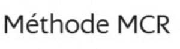

Trade Mark Journal No.2026/003 16 January 2026
WO0000001881006 (41,44)
Office of origin: France
Date of International Registration:8 August 2025
Date of designation in the UK:
8 August 2025

International priority date claimed: 13 February 2025
(France)
(5121144)
- Class 41
- Sports courses; education and training services in the field of sports; sports and fitness instruction services; information services with respect to sports; production and provision of entertainment, particularly via video podcasts and educational sound and video recordings in the field of sports and fitness; providing information about exercise and fitness via a website; individual coaching (training) in the field of sports, including physical preparation and instruction; advice with respect to physical preparation and fitness; yoga courses and instruction, including yoga training and coaching; physical fitness training services in the field of yoga; providing online non-downloadable videos for teaching yoga; meditation courses and training; Pilates courses and training, including coaching and physical training services; training in the field of aesthetics, body care and relaxation; holistic wellness training including advice with respect to body care, nutrition and well-being; education services with respect to wellness and body hygiene, including practical workshops; training in nutrition and dietetics, including online workshops; provision of information and training on balanced nutrition and food cycle management; Pilates courses and training sessions, including Reformer Pilates coaching and physical training services.
- Class 44
- Beauty, body care and relaxation services, namely beauty and health care services; provision of information on balanced nutrition and food cycle management, namely nutrition information services; body care services responding to the holistic doctrine aiming for a global approach focused on the balance between body and mind.
Madame NEUVILLE Céline
Representative: Wynne-Jones IP Limited, Southgate House, Southgate Street Gloucester Gloucestershire GL1 1UB UNITED KINGDOM